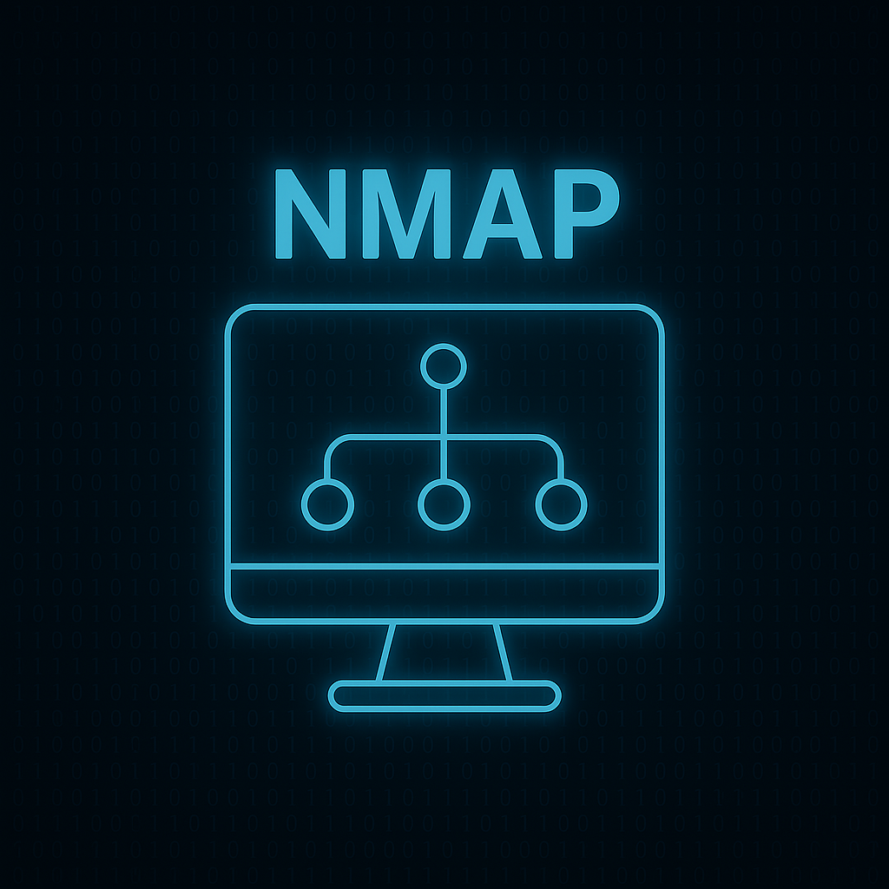

¿Qué es la Ciberseguridad?
La ciberseguridad es el conjunto de medidas y prácticas diseñadas para proteger los sistemas informáticos y redes contra accesos no autorizados, daños o ataques. Garantiza confidencialidad, integridad y disponibilidad de datos.
Principales Amenazas

Herramientas Básicas
Nmap
Explorador de redes y puertos para análisis y auditorías.
Wireshark
Analizador de paquetes en red para monitorear tráfico.
Metasploit
Framework para realizar pruebas de penetración.
Casos Famosos
Phishing
El phishing es una técnica de engaño donde los atacantes se hacen pasar por entidades confiables para robar datos personales y financieros.
Malware
Malware es cualquier software diseñado para dañar o comprometer la seguridad de un sistema. Ejemplos incluyen virus, troyanos y ransomware.
Ingeniería Social
Consiste en técnicas de manipulación para obtener información confidencial mediante el engaño.
Nmap
Nmap es una herramienta de escaneo de redes usada para descubrir hosts y servicios en una red informática.
Wireshark
Wireshark permite capturar y analizar el tráfico que pasa por una red en tiempo real.
Metasploit
Metasploit es una plataforma para desarrollar y ejecutar exploits durante auditorías de seguridad.
WannaCry (2017)
Ataque global de ransomware que afectó a miles de organizaciones, cifrando datos y pidiendo rescate en Bitcoin.
SolarWinds (2020)
Campaña de ciberespionaje que comprometió agencias gubernamentales y empresas mediante una actualización maliciosa.
Facebook (2019)
Filtración masiva de datos personales de más de 500 millones de usuarios.